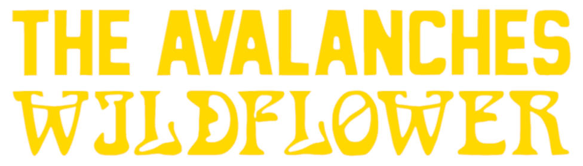

Mi nombre es Luana Moreira y actualmente curso la Licenciatura en Diseño en la Universidad Provincial de Córdoba. Mi formación se vincula con el diseño gráfico, la comunicación visual y los medios digitales.
Me interesa especialmente el desarrollo de identidades visuales, el diseño editorial y las experiencias digitales centradas en el usuario. Busco abordar las estructuras gráficas desde un orden claro, donde la tipografía y el espacio en blanco dialoguen armónicamente.
Entre mis principales referentes se encuentran Bruno Munari, Jorge Frascara y Ellen Lupton, cuyas obras abordan el diseño como una herramienta de comunicación, análisis y resolución de problemas. Sus aportes influyen en mi forma de entender el diseño como una disciplina que combina creatividad, funcionalidad y pensamiento crítico.

Imagen 1: Estudio de contraformas y variantes bold para caracteres de caja baja ('n' y 'v'). Proyecto de tipografía custom. Autoría: Luana Moreira (2026).Podés conocer mis bitácoras de seguimiento en mi Blog de la Materia.